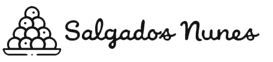

<div class="toolbar" role="banner" style="position: inherit;">
  
    <div class="spacer"></div>
    <button mat-button [matMenuTriggerFor]="menu" *ngIf="usuario.TOKEN">
      <mat-icon aria-hidden="false" aria-label="Example home icon">settings</mat-icon>
    </button>
    <mat-menu #menu="matMenu">
      <button mat-menu-item (click)="configuracoes()" *ngIf="usuario.TIPO == 0">Configurações</button>
      <button mat-menu-item (click)="sair()">Sair</button>
    </mat-menu>
</div>

<router-outlet></router-outlet>